Dizi Önerileri

Stranger Things
Dizi 1980'li yıllarda New York eyaletine bağlı bir liman kasabası olan Montauk'ta geçmektedir. Genç bir çocuk gizemli bir şekilde ortadan kaybolur. Ailesi, arkadaşları ve yerel polisler çocuğun ortadan kaybolması ile ilgili kapsamlı bir soruşturma başlatarak gerçeği açığa çıkartmaya çalışırlar. Olayın soruşturması derinleştikçe gizli hükümet deneylerinin yapıldığı olağanüstü bir gizemin içine çekilirler. Annesi (Winona Ryder) çocuğunu alabilmek için korkunç doğaüstü güçlerle yüzleşmek zorundadır. Aktör David Harbour kasabanın şerifi olarak dizide rol almaktadır.
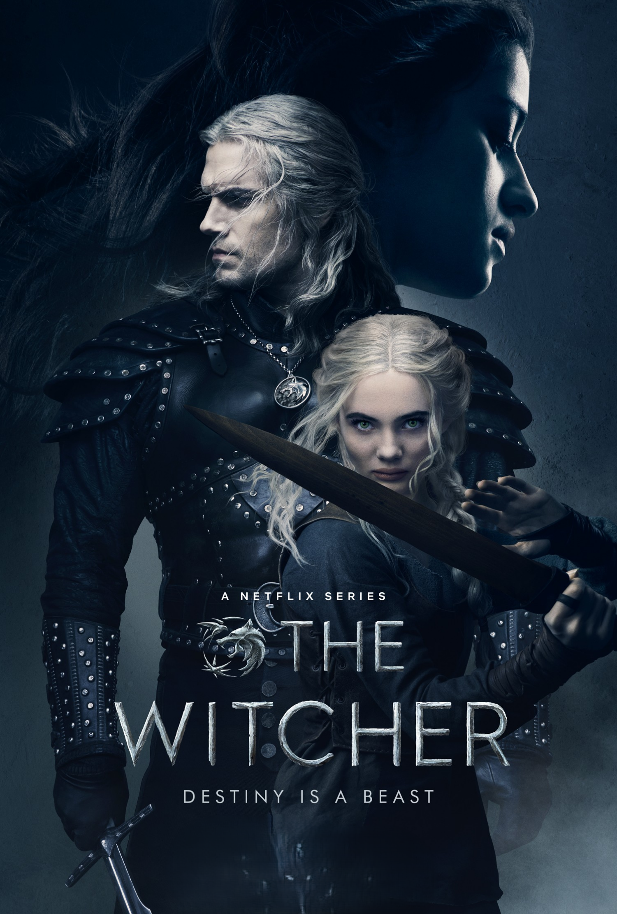
The Witcher
The Witcher, büyücü Rivyalı Geralt'ın maceralarını takip ediyor. Yaratık avcısı Geralt, insanların geri kalan varlıklardan daha tehlikeli olduğu bu evrende hayatta kalmaya çalışır. Kader yollarını güçlü bir büyücü ve genç bir prensesle kesiştirdiğinde ise üçü birlikte sınırları zorlayan bir yo lculuğa koyulurlar. Andrzej Sapkowski'nin sekiz romandan oluşan fantastik serisi, hit video oyunu Witcher'ın da çıkış noktası olmuştu. Oyunun dünya çapında popüler olmasıyla birlikte romanlar, çizgi roman serisi ve masa oyunu olarak da piyasaya sürüldü. Lauren Schmidt Hissrich'in imzasıyla, 8 bölüm halinde ekrana taşınan "The Witcher" 2020'de Netflix'te izleyici karşısına çıkacak. Dizinin oyuncu kadrosunda Freya Allan, Anya Chalotra, Jodhi May, Mimi Ndiweni, Therica Wilson-Read, Millie Brady, Adam Levy, Björn Hlynur Haraldsson ve MyAnna Buring gibi isimler boy gösterecek.
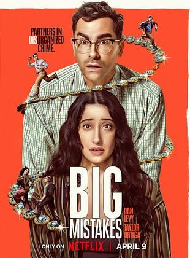
Big Mistakes
Sıradan hayatların kıyısında tutunmaya çalışan, beceriksizlikleriyle nam salmış iki kardeşin dünyası, beklenmedik bir şantajla altüst olur. Kendilerini bir anda yeraltı dünyasının acımasız girdabında bulan bu talihsiz ikili, bilmedikleri kurallarla dolu tehlikeli bir oyunun piyonu haline gelir. Yaşadıkları her an, bir yandan komik durumlara yol açarken, diğer yandan hayatta kalma mücadelesinin en çetin sınavlarını beraberinde getirir.
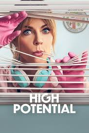
High Potential
Üç çocuğunu tek başına büyüten Morgan, üstün zekâsı sayesinde hayatını değiştirme fırsatı yakalar. Polis departmanında temizlikçi olarak çalışırken, kanıtları dikkatlice inceleyip yeniden düzenleyerek karmaşık bir suçun çözülmesine katkıda bulunur. Morgan’ın bu beklenmedik başarısı, onun ve ailesinin hayatını farklı bir yöne sürükler.
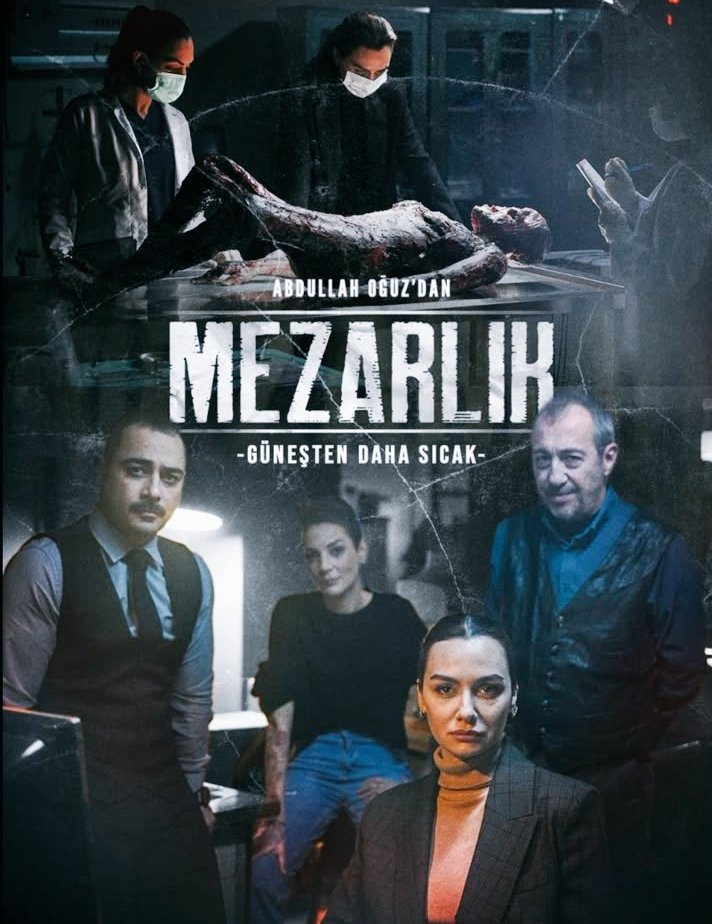
Mezarlık
Komiser Önem Özülkü, kadın cinayetlerini çözmek amacıyla kurulan Özel Suçlar Birimi'nin lideri olarak görevlendirilir. Ekibiyle birlikte gizemli cinayetlerin peşine düşen Özülkü, bu süreçte en büyük engel olarak, cinayetlere karşı önyargılı yaklaşan erkeklerle mücadele etmek zorunda kalır.
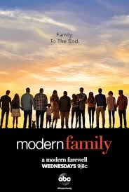
Modern Family
Modern Family, Amerika ABC televizyonun da yayınlanan bir komedi dizisidir. Dizi, 3 aile ve 3 ayrı yaşamı ele almaktadır.İlk ailemizin reisini "Evli ve Çocuklu" dizisinde meşhur Al Bundy karakterini oynayan Ed O'Neill, Jay Pritchett karakteriyle canlandırıyor. Jay kendinden çok daha genç bir eşe sahiptir. Gloria adlı genç eşinin bir de Manny adlı oğlu vardır. Jay, Manny'e bir yandan üvey babalık yapmaya çalışırken diğer yandan da genç eşini başkalarına kaptırmamaya çalışmaktadır. İkinci ailemiz ise Phil ve Claire Dunphy çiftidir. Claire, Jay Pritchett'in öz kızı, Phil ise damadıdır. Phil ve Claire çiftinin Haley, Luke ve Alex adın da 3 çocukları vardır. Aile'nin en büyük derdi yaramaz oğulları Luke ve erkek arkadaş sorunları başlayan kızları Haley ve Alex. Üçüncü ailemiz ise gay bir çiftten oluşuyor, Mitchell ve Cameron. Mitchell, Jay Pritchett'in öz oğlu. Bu çiftimizin Vietnam'dan evlat edindikleri Lilly adlı bir bebekleri bulunuyor.
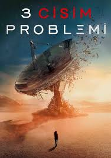
The Three-Body Problem
1960'larda Çin'de alınan bir karar, uzay ve zamanın ötesine geçerek günümüzdeki bir grup bilim insanını insanlığın en büyük tehdidiyle yüzleşmeye zorlar.
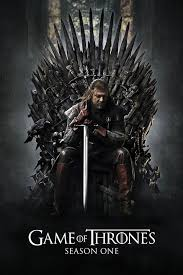
Game Of Thrones
Yedi Krallık'ın kralı Robert Baratheon, ani bir şekilde hayatını kaybederek tahtı çocukluk dostu Eddard Stark'a emanet eder. Eddard, entrikalarla dolu bu dünyada kimin dost, kimin düşman olduğunu kestiremez. Bu durum, Demir Taht'ın eski varisleri için beklenen fırsatı doğurur ve hanedanlar arasında kıyasıya bir mücadele başlar. Dostlukların ve ihanetlerin iç içe geçtiği bu süreçte, Yedi Krallık zorlu bir dönemin eşiğindedir. Ufukta uzun bir kış gözükürken, Kuzey'de Kara Nöbet'in ardında gizlenen karanlık bir güç krallığın üzerine korku salar. Tüm bu kaos içinde, Demir Taht yeni sahibini bekler.
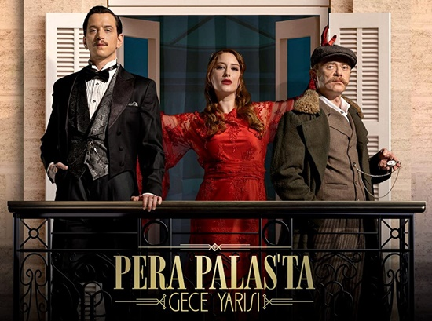
Pera Palasta Gece Yarısı
Genç gazeteci Esra, Pera Palas Oteli hakkında bir makale hazırlamak üzere görevlendirilir. Oteli gezerken, odalardan birinin 1919 yılına açılan bir kapı olduğunu keşfeder. Zamanda bu beklenmedik yolculuk sayesinde, Mustafa Kemal Atatürk'e karşı planlanan bir komployu öğrenir. Türkiye tarihinin gidişatını ve geleceğini koruma sorumluluğunu üstlenen Esra, bu süreçte Halit adında esrarengiz bir adamla karşılaşır ve her şeyin göründüğü gibi olmadığını fark eder.
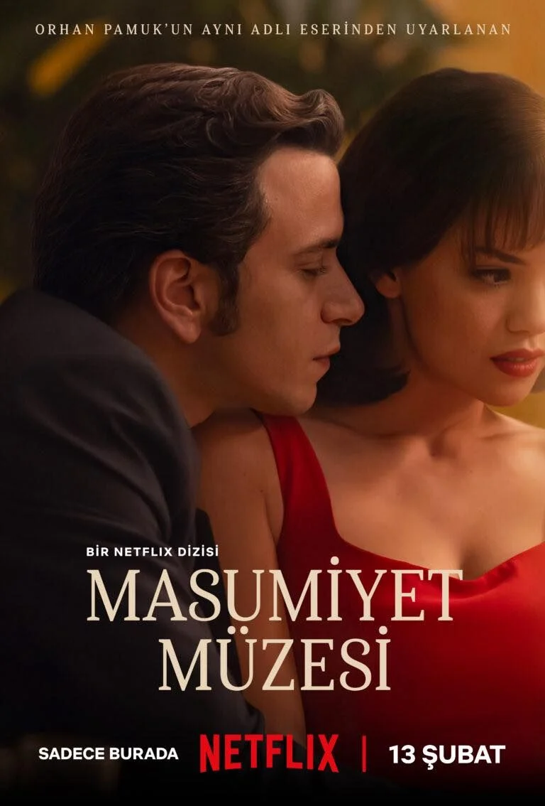
Masumiyet Müzesi
Orhan Pamuk’un dünyaca tanınan romanından uyarlanan Masumiyet Müzesi, 1970’li yıllarda İstanbul’da başlayan, varlıklı bir ailenin oğlu Kemal ile yoksul ve uzak akrabası Füsun arasındaki çalkantılı ilişkiyi konu alır. Füsun’a duyduğu duygular uğruna herkesi karşısına alan Kemal, genç kadına ait küpelerden tokalara, hatta içtiği sigaraların izmaritlerine kadar pek çok eşyayı biriktirmeye koyulur… Yapım, aşkın insanın hayatına bir kaza gibi giren, onu yoldan çıkaran bir saplantı ve acı mı, yoksa saf ve büyük bir mutluluk mu olduğunu sorgular.
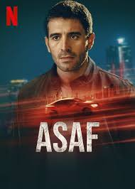
Asaf
Uber şoförü olan Asaf, eşi ve oğlu tarafından terk edildikten sonra hayatını yeniden düzeltmeye çalışır. Ancak onun hayatı, talihsiz bir araba kazası sonucu bambaşka bir hal alır. Kaza sonucu Asaf, yanlış insanların piyonu haline gelir ve artık hiçbir şey eskisi gibi olmaz.
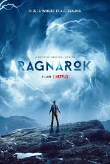
Ragnarok
İnsanlık, iklimsel bir felaketin eşiğinde olduğu bir gelecekle karşı karşıya. Norveç'in kurgusal Edda kasabasında yaşayan bir grup genç, dünyayı saran bu kriz ortamında doğaüstü güçlere sahip olduklarını fark eder. İklim felaketlerinin dünyayı yavaş yavaş yok oluşa sürüklediği bu süreçte, gençler bu güçlerin yardımıyla birbirlerine bağlanır. Nors mitolojisinde bahsedilen Ragnarök benzeri bir kıyameti durdurmak için bir araya gelmeleri gerektiğini anlarlar. Kasabanın sakinleri, zamanla yarışarak bu kadim tehdidi bertaraf etmek zorundadır.
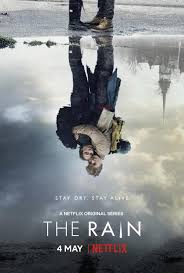
The Rain
Bildiğimiz dünyanın sonu gelmiştir. Yağmurla gelen ve İskandinavya nüfusunun çoğunu yok eden ölümcül bir virüsten altı yıl sonra, iki Danimarkalı kardeş güvenli bir yer bulmak için bir yolculuğa çıkarlar. Kendileri gibi hayatta kalan diğer gençlere katılarak, İskandinavya’nın geri kalanında bir hayat belirtisi aramak üzere tehlikeli bir yolculuğa başlarlar. Kolektif geçmişlerinden ve toplumsal kurallardan kurtulmak isteyen grup üyeleri, istedikleri kişi olmakta özgürdür. Hayatta kalma savaşı veren gençler, geride bıraktıkları dünyada kaldığına inandıkları, aşk, kıskançlık, yaşlılık gibi birçok sorunun kıyamet sonrası dünyada bile var olduğunu keşfederler.w
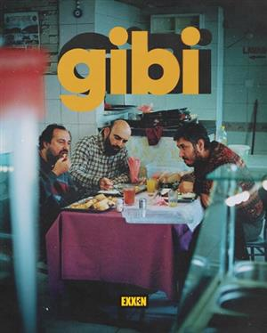
Gibi
Gibi, kendilerini türlü talihsizliklerin, tuhaf olayların içinde bulan iki yakın arkadaşın hikayesini konu ediyor. Zamanlarının çoğunu bir arada geçiren Yılmaz ve İlkkan, sürekli didişen iki yakın arkadaştır. Onlar sıradan bir yaşam sürse de, kendilerini sürekli hayatlarını karmaşıklaştıracak olayların içinde bulurlar. Küçük bir olayı devasa bir boyuta getirmeyi başaran Yılmaz ve İlkkan, zamanla işleri içinden çıkılmaz bir hale getirmekte ustalaşır.
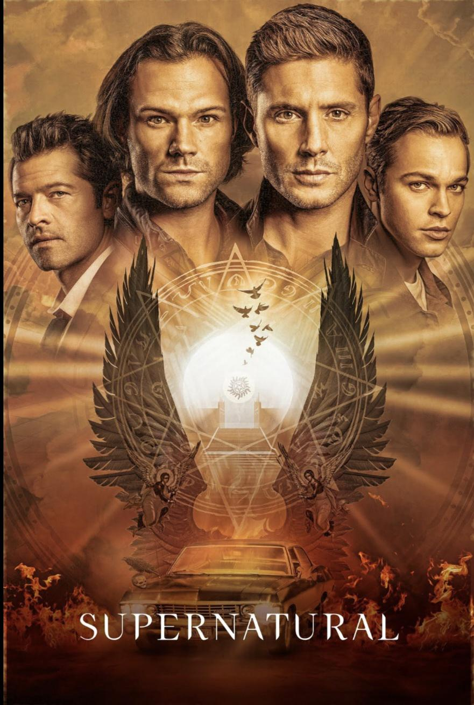
Supernatural | Dizi
Ürpertici. Kaçık. Açıklanamayan. Alaycı Sam Winchester böyle korkunç şeyleri avlamak için büyüdü. Ama hepsi geçmişte kaldı. Hukuk fakültesi onu çağırıyor. Güvenli ve normal bir hayat ta öyle. Ta ki, Sam'in kardeşi Dean rahatsız edici bir haberle karşılaşıncaya kadar: 22 yıldır kötülükle savaşan babaları ortadan kayboldu. Babalarını bulmak için kardeşler babalarının avlarını avlamalı ... ve Sam geride bırakmak istediği hayata geri dönmeli.
Diğer dizi önerileri zamanla eklenecektir.